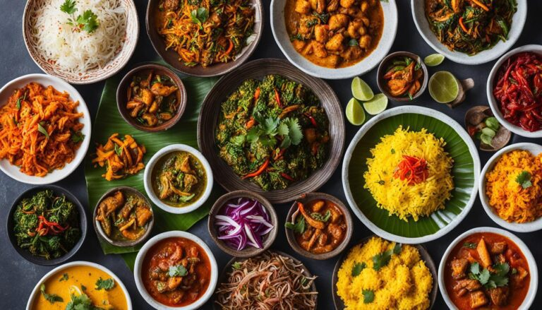
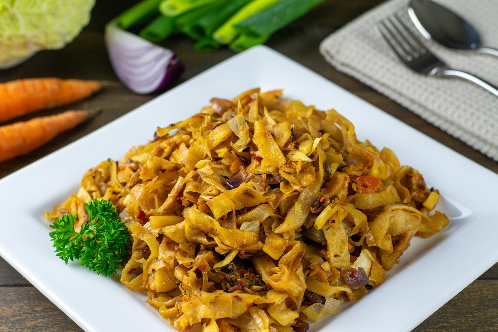
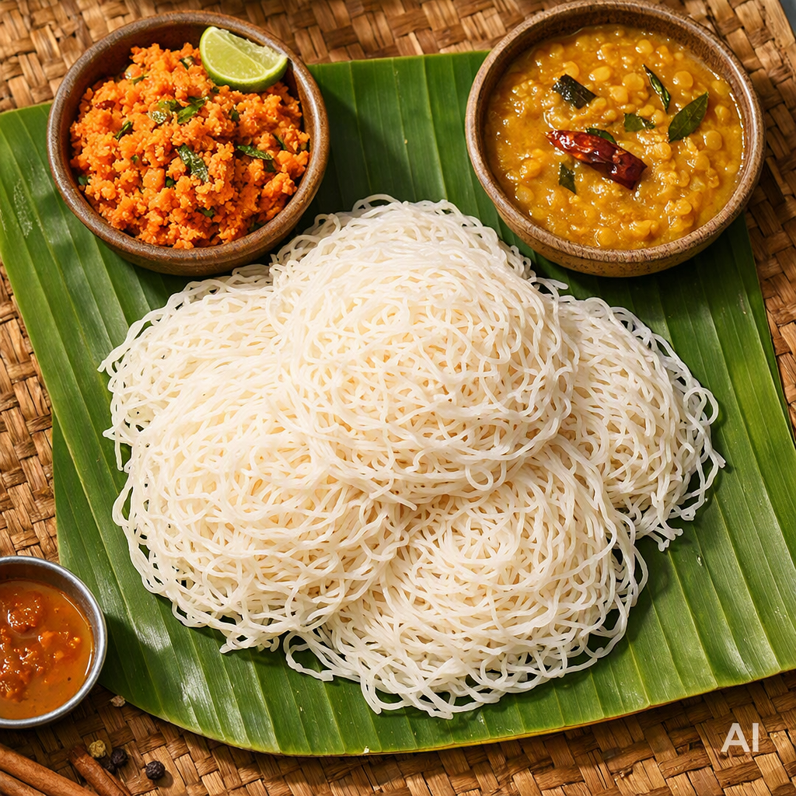

Tamilisch-Sri-Lankisches Catering
Würzig. Authentisch. Für jeden Anlass.
Wir bringen die Aromen von Jaffna und Tamil Nadu direkt zu deiner Feier. Von würzigem Kottu Rotti bis zu zarten String Hoppers – frisch zubereitet für Hochzeiten, Geburtstage und Firmenevents.
Unsere Klassiker
Kotti Rotti:

Frisch geschnittener Rotti mit Gemüse und Gewürzen
